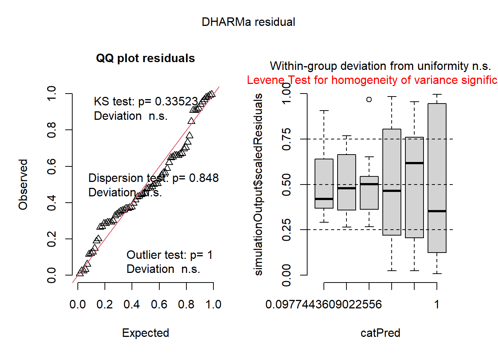
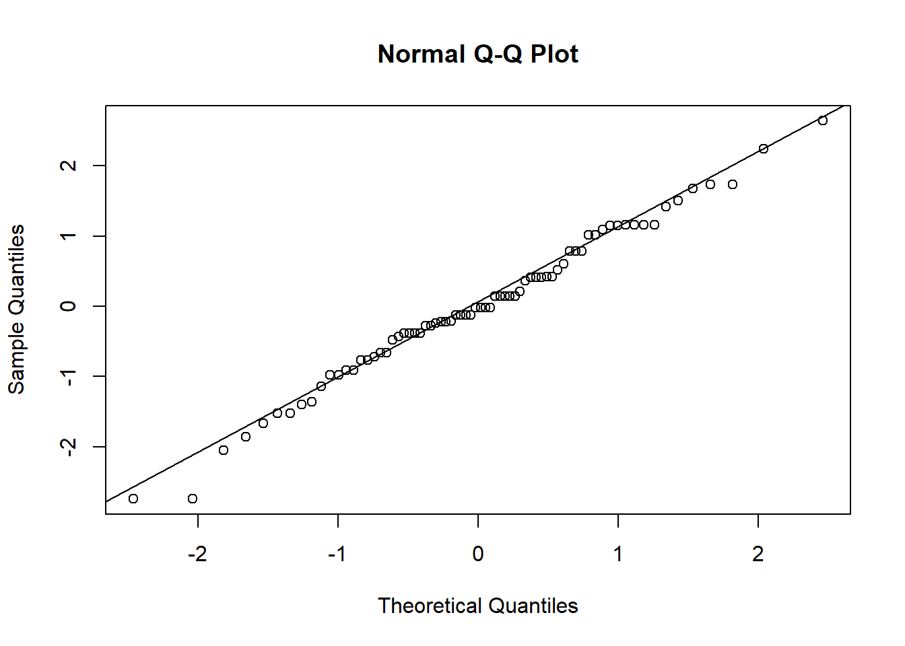
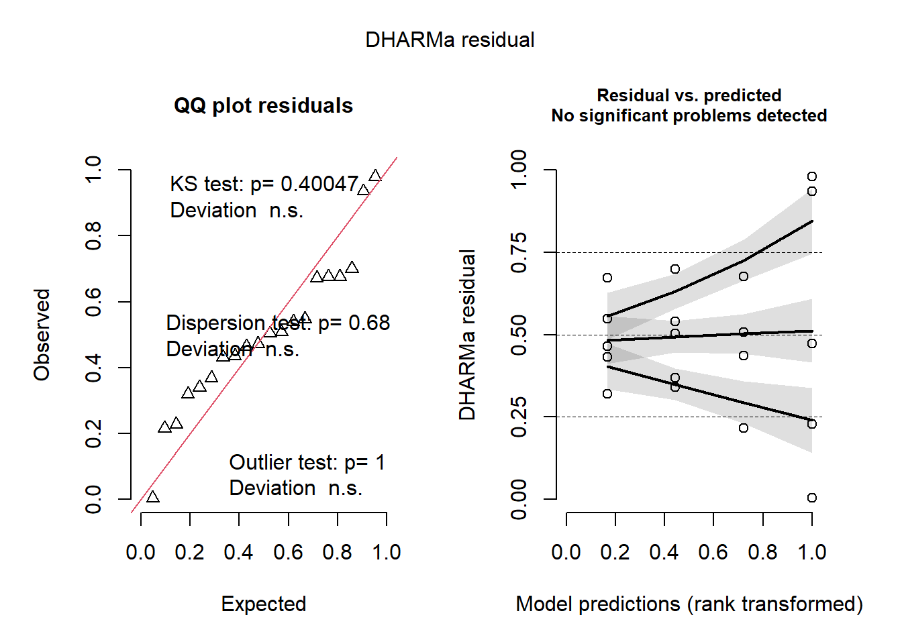

library(gsheet)
library(tidyverse)
library(performance)
library(DHARMa)
library(emmeans)
library(multcomp)
library(multcompView)Aula 7 - Estatística inferencial: ANOVA
Aula 07
Carregando os pacotes
Exemplo de Análise de Variância (ANOVA)
Para realizar a análise de variância (ANOVA), será carregado um conjunto de dados presente no R (conjunto InsectSprays), que será atribuído a um objeto:
inseticida <- InsectSprays
inseticida %>%
count(spray) spray n
1 A 12
2 B 12
3 C 12
4 D 12
5 E 12
6 F 12Com a fórmula count, identificamos que nesse conjunto de dados há um fator (inseticida), com 6 níveis (tipos de inseticidas), cada nível com 12 observações.
Explorando o conjunto
inseticida %>%
ggplot(aes(spray, count))+
geom_boxplot(width = 0.5)
Com o boxplot gerado, é possível notar que há tratamentos que diferem dos demais.
Ajustar o modelo para ANOVA
Para realizar a ANOVA é preciso ajustar um modelo (lm). Isso é necessário para que os resíduos possam ser aplicados nos testes para verificação das premissas da anova. O modelo será atribuído a um objeto.
m1 <- lm(count~spray, data = inseticida)
summary(m1)
Call:
lm(formula = count ~ spray, data = inseticida)
Residuals:
Min 1Q Median 3Q Max
-8.333 -1.958 -0.500 1.667 9.333
Coefficients:
Estimate Std. Error t value Pr(>|t|)
(Intercept) 14.5000 1.1322 12.807 < 2e-16 ***
sprayB 0.8333 1.6011 0.520 0.604
sprayC -12.4167 1.6011 -7.755 7.27e-11 ***
sprayD -9.5833 1.6011 -5.985 9.82e-08 ***
sprayE -11.0000 1.6011 -6.870 2.75e-09 ***
sprayF 2.1667 1.6011 1.353 0.181
---
Signif. codes: 0 '***' 0.001 '**' 0.01 '*' 0.05 '.' 0.1 ' ' 1
Residual standard error: 3.922 on 66 degrees of freedom
Multiple R-squared: 0.7244, Adjusted R-squared: 0.7036
F-statistic: 34.7 on 5 and 66 DF, p-value: < 2.2e-16ANOVA
Uma vez definido o modelo, ele será utilizado como um argumento na função anova:
anova(m1)Analysis of Variance Table
Response: count
Df Sum Sq Mean Sq F value Pr(>F)
spray 5 2668.8 533.77 34.702 < 2.2e-16 ***
Residuals 66 1015.2 15.38
---
Signif. codes: 0 '***' 0.001 '**' 0.01 '*' 0.05 '.' 0.1 ' ' 1Com a análise de variância e interpretação da estatística “F” é possível dizer que dentre os tratamentos, há algum que difere estatisticamente dos demais.
Avaliação das premissas
Estratégia 1
Primeiro, será analisada a normalidade dos resíduos de maneira visual (função hist) e estatisticamente (função shapiro.test).
hist(m1$residuals)
shapiro.test(m1$residuals)
Shapiro-Wilk normality test
data: m1$residuals
W = 0.96006, p-value = 0.02226Apesar do histograma possuir aspecto de normalidade, o teste de Shapiro-Wilk demonstra que os resíduos não possuem normalidade (valor de P = 0.02).
A normalidade também pode ser avaliada visualmente em um gráifco Q-Q, com as funções qqnorm e qqline:
qqnorm(m1$residuals)
qqline(m1$residuals)
O gráfico Q-Q mostra que os pontos desviam da linha de normalidade apenas nas regiões extremas, o que justifica o fato do teste de Shapiro-Wilk ter rejeitado a hipótese de normalidade dos resíduos.
Em sequência, com o teste de Bartlett (bartlett.test), será avaliada a homogeneidade das variâncias entre os grupos:
bartlett.test(count ~ spray,
data = inseticida)
Bartlett test of homogeneity of variances
data: count by spray
Bartlett's K-squared = 25.96, df = 5, p-value = 9.085e-05O teste de Bartlett demonstra que as variâncias são heterogêneas, pois valor de P é menor que 0.01.
Estratégia 2
Usando o pacote performance:
check_normality(m1)Warning: Non-normality of residuals detected (p = 0.022).check_heteroscedasticity(m1)Warning: Heteroscedasticity (non-constant error variance) detected (p < .001).O testes check_normality e check_heteroscedasticity resultaram em não normalidade dos resíduos e heterocedasticidade entre os grupos.
Estratégia 3
Com o pacote DHARMa:
plot(simulateResiduals(m1))
Da mesma forma que as estratégias anteriores, aqui observa-se falta de normalidade e homogeneidade entre as variâncias dos grupos.
Transformação dos dados
Diante dos resultados obtidos, conclui-se que o conjunto de dados não atende as pressuposições da ANOVA, logo é necessário definir uma estratégia para prosseguir na análise dos dados. É possível realizar transformações da variável resposta, adotar um teste não-paramétrico (por exemplo, teste de Kruskal-Wallis), ou utilizar um modelo linear generalizado (Generalized Linear Model - GLM). A seguir, são apresentados exemplos de como se adotar cada estratégia:
Alternativa 1 - Raiz quadrada
Os dados serão transformados com a função sqrt e a coluna da variável resposta será substituída com os novos valores:
inseticida <- inseticida %>%
mutate(count2 = sqrt(count))
glimpse(inseticida)Rows: 72
Columns: 3
$ count <dbl> 10, 7, 20, 14, 14, 12, 10, 23, 17, 20, 14, 13, 11, 17, 21, 11, …
$ spray <fct> A, A, A, A, A, A, A, A, A, A, A, A, B, B, B, B, B, B, B, B, B, …
$ count2 <dbl> 3.162278, 2.645751, 4.472136, 3.741657, 3.741657, 3.464102, 3.1…Análise visual dos dados transformados
inseticida %>%
ggplot(aes(spray, count2))+
geom_boxplot(width = 0.5)
Visualmente, é possível dizer que, possivelmente, os dados transformados agora possuem normalidade e homocedasticidade, pois os valores de mediana tendem a se encontrar nos centros da caixas e essas tem tamanho mais ou menos similar entre si.
Ajuste do novo modelo
m2 <- lm(count2 ~ spray,
data = inseticida)
summary(m2)
Call:
lm(formula = count2 ~ spray, data = inseticida)
Residuals:
Min 1Q Median 3Q Max
-1.24486 -0.39970 -0.01902 0.42661 1.40089
Coefficients:
Estimate Std. Error t value Pr(>|t|)
(Intercept) 3.7607 0.1814 20.733 < 2e-16 ***
sprayB 0.1160 0.2565 0.452 0.653
sprayC -2.5158 0.2565 -9.807 1.64e-14 ***
sprayD -1.5963 0.2565 -6.223 3.80e-08 ***
sprayE -1.9512 0.2565 -7.606 1.34e-10 ***
sprayF 0.2579 0.2565 1.006 0.318
---
Signif. codes: 0 '***' 0.001 '**' 0.01 '*' 0.05 '.' 0.1 ' ' 1
Residual standard error: 0.6283 on 66 degrees of freedom
Multiple R-squared: 0.7724, Adjusted R-squared: 0.7552
F-statistic: 44.8 on 5 and 66 DF, p-value: < 2.2e-16ANOVA com os novos dados
anova (m2)Analysis of Variance Table
Response: count2
Df Sum Sq Mean Sq F value Pr(>F)
spray 5 88.438 17.6876 44.799 < 2.2e-16 ***
Residuals 66 26.058 0.3948
---
Signif. codes: 0 '***' 0.001 '**' 0.01 '*' 0.05 '.' 0.1 ' ' 1Mesmo após transformação, os dados continuem apresentando diferença significativa, ou seja, há pelo menos uma média que difere das demais.
Avaliação das premissas - Normalidade
hist(m2$residuals)
qqnorm(m2$residuals)
qqline(m2$residuals)
shapiro.test(m2$residuals)
Shapiro-Wilk normality test
data: m2$residuals
W = 0.98721, p-value = 0.6814Visual e estatisticamente, conclui-se que os resíduos do conjunto de dados transformados possuem distribuição normal.
Avaliação das premissas - Homocedasticidade
bartlett.test(count2 ~ spray,
data = inseticida)
Bartlett test of homogeneity of variances
data: count2 by spray
Bartlett's K-squared = 3.7525, df = 5, p-value = 0.5856Após a transformação, é possível dizer que há homogeneidade de variâncias entre os grupos.
Avaliação das premissas - Pacote performance:
check_normality(m2)OK: residuals appear as normally distributed (p = 0.681).check_heteroscedasticity(m2)OK: Error variance appears to be homoscedastic (p = 0.854).Avaliação das premissas - Pacote DHARMa
plot(simulateResiduals(m2))
Após os vários testes realizados, temos confiança que os dados transformados possuem distribuição normal e homogeneidade das variâncias. Logo, é possível realizar comparações de médias.
Comparação de médias
Para o modelo 1 - não transformado (não atendendo às pressuposições):
Apenas à título de curiosidade, será feita uma comparação de médias com base nos valores originais. O que não é correto, uma vez que esses não satisfazem as pressuposições da ANOVA.
Para isso, a função emmeans, indicando o modelo (m1) e os tratamentos (spray), será atribuída a um objeto.
m1_medias <- emmeans(m1, ~ spray)
plot(m1_medias)
O gráfico gerado mostra que para essa situação, os tratamentos tendem a formar dois grupos de eficiência.
multcomp::cld(m1_medias) spray emmean SE df lower.CL upper.CL .group
C 2.08 1.13 66 -0.177 4.34 1
E 3.50 1.13 66 1.240 5.76 1
D 4.92 1.13 66 2.656 7.18 1
A 14.50 1.13 66 12.240 16.76 2
B 15.33 1.13 66 13.073 17.59 2
F 16.67 1.13 66 14.406 18.93 2
Confidence level used: 0.95
P value adjustment: tukey method for comparing a family of 6 estimates
significance level used: alpha = 0.05
NOTE: If two or more means share the same grouping symbol,
then we cannot show them to be different.
But we also did not show them to be the same. O que é comprovado estatisticamente pela comparação de médias, utilizando o teste de Tukey.
Para o modelo 2 - transformado
Para os dados transformados, serão aplicados os mesmos passos descritos acima:
m2_medias <- emmeans(m2, ~ spray)
plot(m2_medias)
Visualmente, é possível dizer que os inseticidas formam três grupos distintos.
multcomp::cld(m2_medias) spray emmean SE df lower.CL upper.CL .group
C 1.24 0.181 66 0.883 1.61 1
E 1.81 0.181 66 1.447 2.17 12
D 2.16 0.181 66 1.802 2.53 2
A 3.76 0.181 66 3.399 4.12 3
B 3.88 0.181 66 3.514 4.24 3
F 4.02 0.181 66 3.656 4.38 3
Confidence level used: 0.95
P value adjustment: tukey method for comparing a family of 6 estimates
significance level used: alpha = 0.05
NOTE: If two or more means share the same grouping symbol,
then we cannot show them to be different.
But we also did not show them to be the same. Com a média transformada, o teste de Tukey agrupa os tratamentos em 3 grupos distintos, logo houve melhor discriminação. Com isso, concluímos que, em comparação aos demais, o inseticida C foi o mais eficiente, pois apresentou menor número de insetos contados. Em seguida, os inseticidas E e D apresentaram desempenho intermediário. Por fim, há um grupo com os inseticidas menos eficientes, nesse caso, contendo os tratamentos A, B e F.
Alternativas para visualização das comparações de médias
Função pwpm:
A função pwpm (emmeans) constrói uma matriz de valores de probabilidade, onde são apresentadas as comparações entre tratamentos, par a par. Nas diagonais, entre colchetes, são apresentados os valores de média de cada tratamento.
pwpm(m2_medias) A B C D E F
A [3.76] 0.9975 <.0001 <.0001 <.0001 0.9145
B -0.116 [3.88] <.0001 <.0001 <.0001 0.9936
C 2.516 2.632 [1.24] 0.0081 0.2513 <.0001
D 1.596 1.712 -0.919 [2.16] 0.7366 <.0001
E 1.951 2.067 -0.565 0.355 [1.81] <.0001
F -0.258 -0.142 -2.774 -1.854 -2.209 [4.02]
Row and column labels: spray
Upper triangle: P values adjust = "tukey"
Diagonal: [Estimates] (emmean)
Lower triangle: Comparisons (estimate) earlier vs. laterFunção pwpp:
A função pwpp (emmeans) constrói uma plotagem de valores de probabilidade associados as comparações pareadas das médias marginais estimadas.
pwpp (m2_medias)
Função pairs:
A função pairs apresenta os contrastes ortogonais dos valores de médias dos tratamentos, associados aos valores de probabilidade.
pairs(m2_medias) contrast estimate SE df t.ratio p.value
A - B -0.116 0.257 66 -0.452 0.9975
A - C 2.516 0.257 66 9.807 <.0001
A - D 1.596 0.257 66 6.223 <.0001
A - E 1.951 0.257 66 7.606 <.0001
A - F -0.258 0.257 66 -1.006 0.9145
B - C 2.632 0.257 66 10.259 <.0001
B - D 1.712 0.257 66 6.675 <.0001
B - E 2.067 0.257 66 8.058 <.0001
B - F -0.142 0.257 66 -0.554 0.9936
C - D -0.919 0.257 66 -3.584 0.0081
C - E -0.565 0.257 66 -2.201 0.2513
C - F -2.774 0.257 66 -10.813 <.0001
D - E 0.355 0.257 66 1.383 0.7366
D - F -1.854 0.257 66 -7.229 <.0001
E - F -2.209 0.257 66 -8.612 <.0001
P value adjustment: tukey method for comparing a family of 6 estimates Alternativa 1.2 - Transformação de Box–Cox
Para tentar sanar o problema da falta de normalidade e/ou heterocedasticidade, é possível utilizar um segundo tipo de transformação, neste caso a transformação de Box-Cox.
A transformação de Box-Cox se baseia na seguinte equação:
\(y_{(\lambda)} = (y^{\lambda} - 1)/ \lambda\)
Onde, y representa a variável resposta original; \(y_{(\lambda)}\) é a variável resposta transformada; e lambda (𝛌) é o parâmetro de transformação, variando entre - ∞ e + ∞.
Para conduzir essa transformação, é utilizada a função boxcox (pacote MASS). A função calcula e identifica o valor 𝛌 ótimo para um determinado conjunto de dados (onde o valor de Y é máximo).
library(MASS)
b <- boxcox(lm(inseticida$count + 0.1 ~ 1))
lambda <- b$x [which.max(b$y)]
lambda[1] 0.4242424Com os comandos acima é possível determinar na equação (b) o valor de 𝛌 (no eixo x), cujo valor de y é máximo. Logo, para o conjunto em análise, 𝛌 ≅ 0.42.
Transformando os dados com Box-Cox
Com o valor calculado acima, realiza-se a transformação de Box-Cox:
inseticida$count3 <-(inseticida$count ^ lambda - 1) / lambda
Novo modelo
m3 <- lm(count3 ~ spray,
data = inseticida)
Avaliação de normalidade e homogeneidade de variâncias entre os grupos:
hist(inseticida$count3)
qqnorm (m3$residuals)
qqline (m3$residuals)
shapiro.test(m3$residuals)
Shapiro-Wilk normality test
data: m3$residuals
W = 0.98873, p-value = 0.7723bartlett.test(count3 ~ spray,
data = inseticida)
Bartlett test of homogeneity of variances
data: count3 by spray
Bartlett's K-squared = 5.7412, df = 5, p-value = 0.3322Com a transformação de Box-Cox, os dados passaram a possuir normalidade e homocedasticidade, satisfazendo as pressuposições da ANOVA. Em seguida poderiam ser feitos ANOVA e comparação de médias como já demonstrado anteriormente.
Alternativa 2 - Usar um teste não paramétrico
Como a variável resposta do conjunto de dados em estudo é do tipo numérica discreta e não pareada, é adotado o teste de Kruskal Wallis.
kruskal.test
Essa função faz um teste de Kruskal Wallis e é útil apenas para informar se há alguma diferença estatística significativa entre os grupos.
kruskal.test(count ~ spray,
data = inseticida)
Kruskal-Wallis rank sum test
data: count by spray
Kruskal-Wallis chi-squared = 54.691, df = 5, p-value = 1.511e-10kruskal (pacote agricolae)
Além de realizar o teste de Kruskal Wallis, faz a comparação post hoc utilizando o critério da diferença menos significativa de Fisher.
library(agricolae)
KWT <- kruskal(inseticida$count,
inseticida$spray,
group = TRUE)
KWT$statistics
Chisq Df p.chisq t.value MSD
54.69134 5 1.510845e-10 1.996564 8.462804
$parameters
test p.ajusted name.t ntr alpha
Kruskal-Wallis none inseticida$spray 6 0.05
$means
inseticida.count rank std r Min Max Q25 Q50 Q75
A 14.500000 52.16667 4.719399 12 7 23 11.50 14.0 17.75
B 15.333333 54.83333 4.271115 12 7 21 12.50 16.5 17.50
C 2.083333 11.45833 1.975225 12 0 7 1.00 1.5 3.00
D 4.916667 25.58333 2.503028 12 2 12 3.75 5.0 5.00
E 3.500000 19.33333 1.732051 12 1 6 2.75 3.0 5.00
F 16.666667 55.62500 6.213378 12 9 26 12.50 15.0 22.50
$comparison
NULL
$groups
inseticida$count groups
F 55.62500 a
B 54.83333 a
A 52.16667 a
D 25.58333 b
E 19.33333 bc
C 11.45833 c
attr(,"class")
[1] "group"O teste não paramétrico resultou na mesma resposta que o modelo com os dados transformados (modelo m2).
Alternativa 3 - modelo linear generalizado (Generalized Linear Model - GLM)
O uso de modelos lineares generalizados pode ser visto como um método de transformação mais bonito e elegante que os apresentados anteriormente, mesmo que ambas as metodologias estejam corretas.
Com o GLM, o modelo (a função) mais apropriado é definido de acordo com a distribuição dos dados em análise.
Neste exemplo, será aplicada uma distribuição de Poisson, já que a variável resposta é do tipo numérica discreta.
A função glm é utilizada para ajustar o modelo linear, onde é preciso indicar a variável resposta, a variável independente, a família de distribuição de probabilidade e o conjunto de dados utilizado.
m4 <- glm(count ~ spray,
family = poisson,
data = inseticida)
summary(m4)
Call:
glm(formula = count ~ spray, family = poisson, data = inseticida)
Coefficients:
Estimate Std. Error z value Pr(>|z|)
(Intercept) 2.67415 0.07581 35.274 < 2e-16 ***
sprayB 0.05588 0.10574 0.528 0.597
sprayC -1.94018 0.21389 -9.071 < 2e-16 ***
sprayD -1.08152 0.15065 -7.179 7.03e-13 ***
sprayE -1.42139 0.17192 -8.268 < 2e-16 ***
sprayF 0.13926 0.10367 1.343 0.179
---
Signif. codes: 0 '***' 0.001 '**' 0.01 '*' 0.05 '.' 0.1 ' ' 1
(Dispersion parameter for poisson family taken to be 1)
Null deviance: 409.041 on 71 degrees of freedom
Residual deviance: 98.329 on 66 degrees of freedom
AIC: 376.59
Number of Fisher Scoring iterations: 5anova(m4)Analysis of Deviance Table
Model: poisson, link: log
Response: count
Terms added sequentially (first to last)
Df Deviance Resid. Df Resid. Dev
NULL 71 409.04
spray 5 310.71 66 98.33library(car)
Anova(m4)Analysis of Deviance Table (Type II tests)
Response: count
LR Chisq Df Pr(>Chisq)
spray 310.71 5 < 2.2e-16 ***
---
Signif. codes: 0 '***' 0.001 '**' 0.01 '*' 0.05 '.' 0.1 ' ' 1Verificação das pressuposições da ANOVA
plot(simulateResiduals(m4))
Comparação de médias — continuar
m4_medias <- emmeans(m4, ~ spray,
type = "response") #para apresentar as médias no formato original, não em log#
m4_medias spray rate SE df asymp.LCL asymp.UCL
A 14.50 1.099 Inf 12.50 16.82
B 15.33 1.130 Inf 13.27 17.72
C 2.08 0.417 Inf 1.41 3.08
D 4.92 0.640 Inf 3.81 6.35
E 3.50 0.540 Inf 2.59 4.74
F 16.67 1.179 Inf 14.51 19.14
Confidence level used: 0.95
Intervals are back-transformed from the log scale cld(m4_medias) spray rate SE df asymp.LCL asymp.UCL .group
C 2.08 0.417 Inf 1.41 3.08 1
E 3.50 0.540 Inf 2.59 4.74 12
D 4.92 0.640 Inf 3.81 6.35 2
A 14.50 1.099 Inf 12.50 16.82 3
B 15.33 1.130 Inf 13.27 17.72 3
F 16.67 1.179 Inf 14.51 19.14 3
Confidence level used: 0.95
Intervals are back-transformed from the log scale
P value adjustment: tukey method for comparing a family of 6 estimates
Tests are performed on the log scale
significance level used: alpha = 0.05
NOTE: If two or more means share the same grouping symbol,
then we cannot show them to be different.
But we also did not show them to be the same. Experimento Fatorial - 2ANOVA
Importação e visualização dos dados
FAT <- gsheet2tbl("https://docs.google.com/spreadsheets/d/1bq2N19DcZdtax2fQW9OHSGMR0X2__Z9T/edit#gid=2023059672")Ao aplicar o comando theme_set (theme_bw()), todos os gráficos gerados a partir da inserção deste comando terão o tema designado, no caso “theme_bw”.
theme_set(theme_bw())
FAT %>%
ggplot(aes(treat, severity, color = factor(dose)))+
geom_jitter(width = 0.1)
FAT %>%
ggplot(aes(treat, severity, color = factor(dose)))+
geom_jitter()+
facet_wrap(~dose)
Acima, foram apresentados dois gráficos para visualização dos dados. A primeira opção, faz uso de cores para apresentar as respostas associados aos níveis do fator dose, enquanto os níveis do fator “treat” são apresentados no eixo x.
Já a segunda opção, faz uso da função facet_wrap, em que são construídos dois gráficos, um para cada nível do fator dose.
Ajustar o modelo fatorial
Para construir o modelo para experimento com arranjo fatorial ainda será utilizada a função lm. No entanto, como dois ou mais fatores serão avaliados é preciso incluir as outras variáveis independentes no modelo. Dessa forma, a fórmula seria baseada em: variável resposta~varíavel indepedente_1*varíavel indepedente_2.
mf <- lm (severity ~ treat*dose,
data = FAT)ANOVA com 2 fatores
anova(mf)Analysis of Variance Table
Response: severity
Df Sum Sq Mean Sq F value Pr(>F)
treat 1 0.113232 0.113232 30.358 4.754e-05 ***
dose 1 0.073683 0.073683 19.755 0.0004077 ***
treat:dose 1 0.072739 0.072739 19.502 0.0004326 ***
Residuals 16 0.059678 0.003730
---
Signif. codes: 0 '***' 0.001 '**' 0.01 '*' 0.05 '.' 0.1 ' ' 1A análise de variância nos mostra que há diferença entre as médias dos tratamentos (treat, F =4.754e-05), entre as médias das doses (dose, F = 0.0004077), e que também há diferenças significativas na interação tratamento*dose (treat:dose, F = 0.0004326).
Portanto, como há interações entre fatores, será preciso decompor as médias e realizar comparações para os níveis das doses dentro do fator tratamento, e dos níveis do tratamentos dentro do fator dose.
Verificação das premissas - DHARMa
plot(simulateResiduals(mf))
Os resultados obtidos pelo pacote DHARMa demonstram que os dados seguem distribuição normal e há homogeneidade de variância entre os grupos.
Comparação de médias
Para comparação de médias, também será utilizada a função emmeans, e para análise de um fator dentro de outro é preciso indicar a ordem dos fatores, separado por uma barra ( | ).
Comparação dos níves do tratamento dentro dos níveis da dose
mf_medias <- emmeans(mf, ~ treat | dose)
cld(mf_medias)dose = 0.5:
treat emmean SE df lower.CL upper.CL .group
Tebuconazole 0.0210 0.0273 16 -0.03690 0.0789 1
Ionic liquid 0.2921 0.0273 16 0.23420 0.3500 2
dose = 2.0:
treat emmean SE df lower.CL upper.CL .group
Tebuconazole 0.0202 0.0273 16 -0.03768 0.0781 1
Ionic liquid 0.0501 0.0273 16 -0.00781 0.1080 1
Confidence level used: 0.95
significance level used: alpha = 0.05
NOTE: If two or more means share the same grouping symbol,
then we cannot show them to be different.
But we also did not show them to be the same. Comparação dos níves da dose dentro dos níveis do tratamento
mf_medias <- emmeans(mf, ~ dose | treat)
cld(mf_medias)treat = Ionic liquid:
dose emmean SE df lower.CL upper.CL .group
2.0 0.0501 0.0273 16 -0.00781 0.1080 1
0.5 0.2921 0.0273 16 0.23420 0.3500 2
treat = Tebuconazole:
dose emmean SE df lower.CL upper.CL .group
2.0 0.0202 0.0273 16 -0.03768 0.0781 1
0.5 0.0210 0.0273 16 -0.03690 0.0789 1
Confidence level used: 0.95
significance level used: alpha = 0.05
NOTE: If two or more means share the same grouping symbol,
then we cannot show them to be different.
But we also did not show them to be the same.